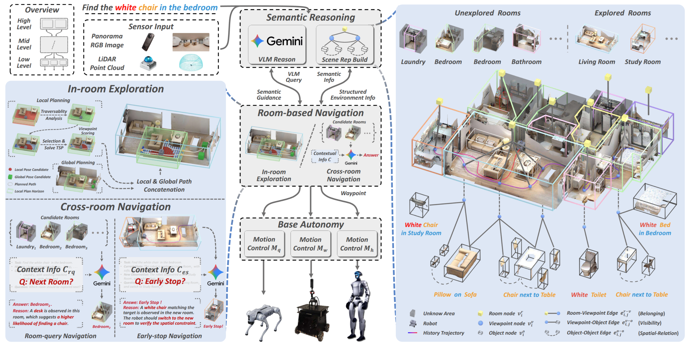
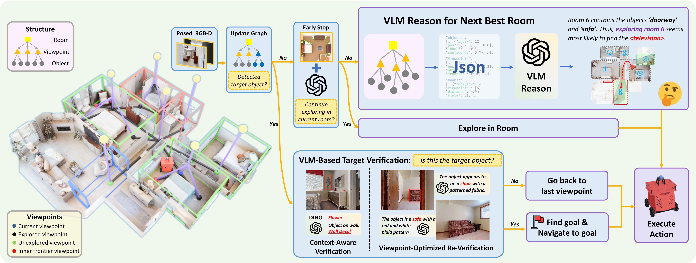
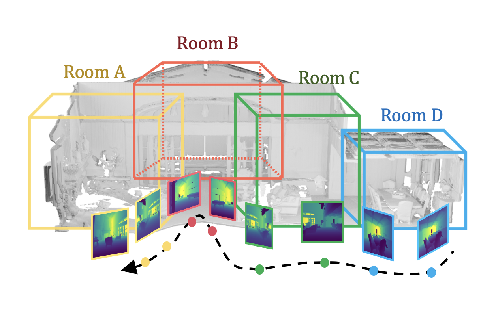
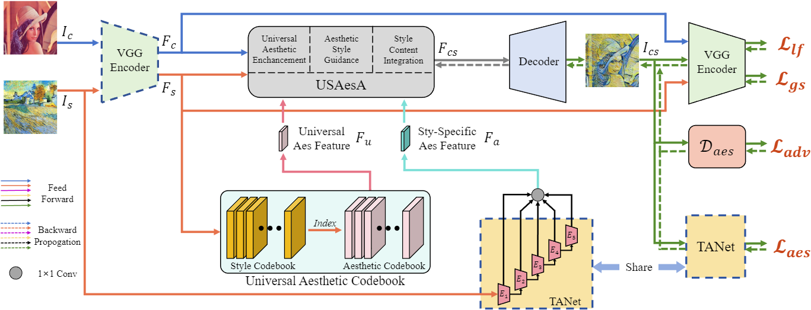
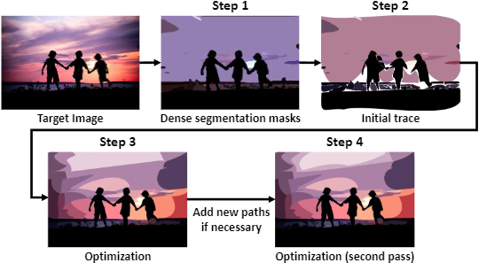
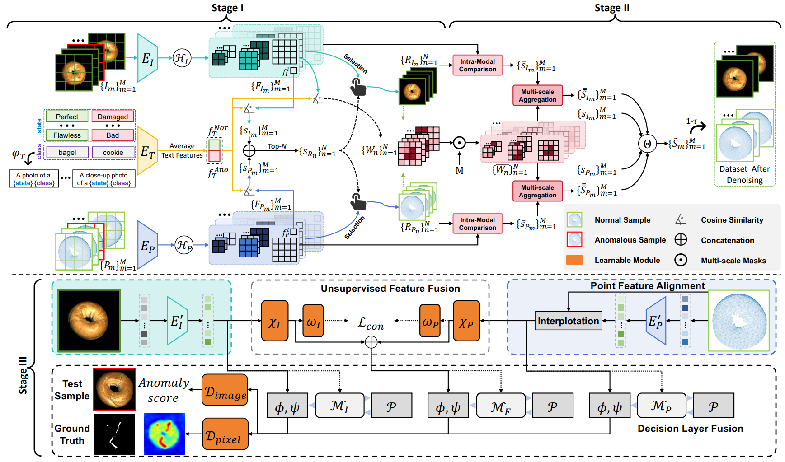
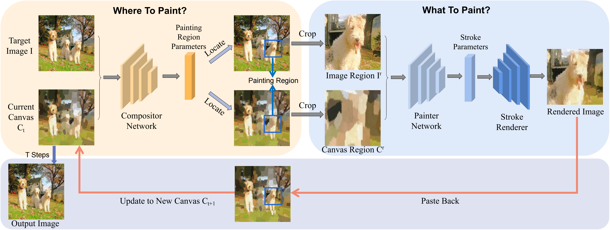
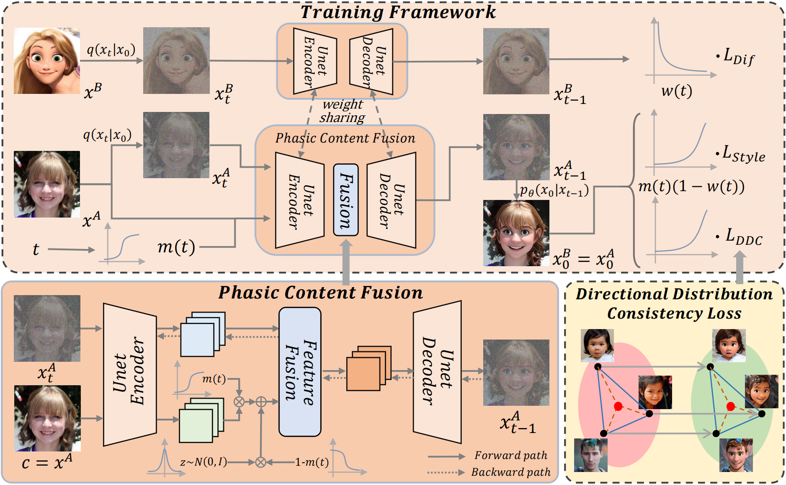

|
Publications & Preprints (* means equal contribution, # means corresponding author)
|
|

|
SysNav: Multi-Level Systematic Cooperation Enables Real-World, Cross-Embodiment Object Navigation
Haokun Zhu,
Zongtai Li,
Zihan Liu,
Kevin Guo,
Zhengzhi Lin,
Yuxin Cai,
Guofei Chen,
Chen Lv,
Wenshan Wang,
Jean Oh,
Ji Zhang
Under Review
[website] [arXiv]
We propose SysNav, a three-level object navigation system that decouples semantic reasoning, navigation planning, and motion control.
We introduce a hierarchical navigation strategy that treats rooms as minimal decision-making units.
Our system supports both standard object navigation and conditional object navigation.
We evaluate SysNav through 190 real-world experiments across three robot embodiments, achieving 4-5x higher navigation efficiency than existing baselines.
To our knowledge, this is the first system capable of reliably and efficiently performing building-scale object navigation in the real-world environments.
|
|

|
STRIVE: Structured Representation Integrating VLM Reasoning for Efficient Object Navigation
Haokun Zhu*,
Zongtai Li*,
Zhixuan Liu,
Wenshan Wang,
Ji Zhang,
Jonathan Francis,
Jean Oh
Accepted by ICRA 2026
RSS 2025 Workshop on Semantic Reasoning and Goal Understanding in Robotics
[website] [arXiv]
We propose a novel framework that constructs a multi-layer representation of the environment during
navigation. Building on this representation, we propose a novel
two-stage navigation policy, integrating high-level planning guided by VLM rea-
soning with low-level VLM-assisted exploration to efficiently locate a goal object.
We evaluated our approach on three simulated benchmarks (HM3D, RoboTHOR,
and MP3D), and achieved state-of-the-art performance on both the success rate
(↑ 7.1%) and navigation efficiency (↑ 12.5%).
|
|

|
MOSAIC: Generating Consistent, Privacy-Preserving Scenes from Multiple Depth Views in Multi-Room Environments
Zhixuan Liu,
Haokun Zhu,
Rui Chen,
Jonathan Francis,
Soonmin Hwang,
Ji Zhang,
Jean Oh
Accepted by ICCV 2025
[website] [Paper] [Code]
MOSAIC generates multi-view consistent images based on depth prior along robot navigation trajectories. It handles arbitrary viewpoint changes in multi-room environments and generalizes to open vocabulary contexts.
|
|

|
AesStyler: Aesthetic Guided Universal Style Transfer
Ran Yi*,#,
Haokun Zhu*,
Teng Hu,
Yu-Kun Lai,
Paul L. Rosin
Accepted by ACM MM 2024
[website]
We propose AesStyler, a novel Aesthetic Guided Universal Style Transfer method, which utilizes pre-trained aesthetic assessment model, a novel Universal Aesthetic Codebook and a novel Universal and Specific Aesthetic-Guided Attention (USAesA) module. Extensive experiments and user-studies have demonstrated that our approach generates aesthetically more harmonious and pleasing results than the state-of-the-art methods.
|
|

|
SAMVG: A Multi-stage Image Vectorization Model with the Segment-Anything Model
Haokun Zhu*,
Juang Ian Chong*,
Teng Hu,
Ran Yi,
Yu-Kun Lai,
Paul L. Rosin
Accepted by ICASSP 2024
[pdf] [arXiv]
We propose SAMVG, a multi-stage model to vectorize raster images into SVG (Scalable Vector Graphics). Through a series of extensive experiments, we demonstrate that SAMVG can produce high quality SVGs in any domain while requiring less computation time and complexity compared to previous state-of-the-art methods.
|
|

|
M3DM-NR: RGB-3D Noisy-Resistant Industrial Anomaly Detection via Multimodal Denoising
Chengjie Wang,
Haokun Zhu,
Jinlong Peng,
Yue Wang,
Ran Yi,
Yunsheng Wu,
Lizhuang Ma,
Jiangning Zhang
Accepted by TPAMI
[pdf] [arXiv]
We propose M3DM-NR, a novel noise-resistant framework to leverage the strong multi-modal(image and point cloud) discriminative capabilities of CLIP. Extensive experiments show that M3DM-NR outperforms state-of-the-art methods in 3D-RGB multi-modal noisy anomaly detection
|
|

|
Stroke-based Neural Painting and Stylization with Dynamically Predicted Painting Region
Teng Hu,
Ran Yi,
Haokun Zhu,
Liang Liu,
Jinlong Peng,
Yabiao Wang,
Chengjie Wang,
Lizhuang Ma
Accepted by ACM MM 2023
[pdf] [code] [arXiv]
We propose Compositional Neural Painter, a novel stroke-based rendering framework which dynamically predicts the next painting region based on the current canvas, instead of dividing the image plane uniformly into painting regions. Extensive experiments show our model outperforms the existing models in stroke-based neural painting.
|
|

|
Phasic Content Fusing Diffusion Model with Directional Distribution Consistency for Few-Shot Model Adaption
Teng Hu,
Jiangning Zhang,
Liang Liu,
Ran Yi,
Siqi Kou,
Haokun Zhu,
Xu Chen,
Yabiao Wang,
Chengjie Wang,
Lizhuang Ma
Accepted by ICCV 2023
[pdf] [supp] [code] [arXiv]
We propose a novel phasic content fusing few-shot diffusion model with directional distribution consistency loss, which targets different learning objectives at distinct training stages of the diffusion model. Theoretical analysis, and experiments demonstrate the superiority of our approach in few-shot generative model adaption tasks.
|
|
{kind=link}